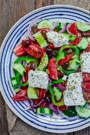

Greek Salad

Description
Greek-inspired salad with tomato, cucumber, and feta cheese.
Ingredients
- 3 large ripe tomatoes, chopped
- 2 medium cucumbers, peeled and chopped
- 1 small red onion, chopped
- ¼ cup olive oil
- 4 teaspoons lemon juice
- 1 ½ teaspoons dried oregano
- salt and pepper to taste
- 1 cup crumbled feta cheese
- 6 black Greek olives, pitted and sliced
Steps
- Toss tomatoes, cucumbers, and red onion together in a shallow salad bowl. Drizzle oil and lemon juice over top, then sprinkle with oregano, salt, and pepper. Top with feta and olives.
Home